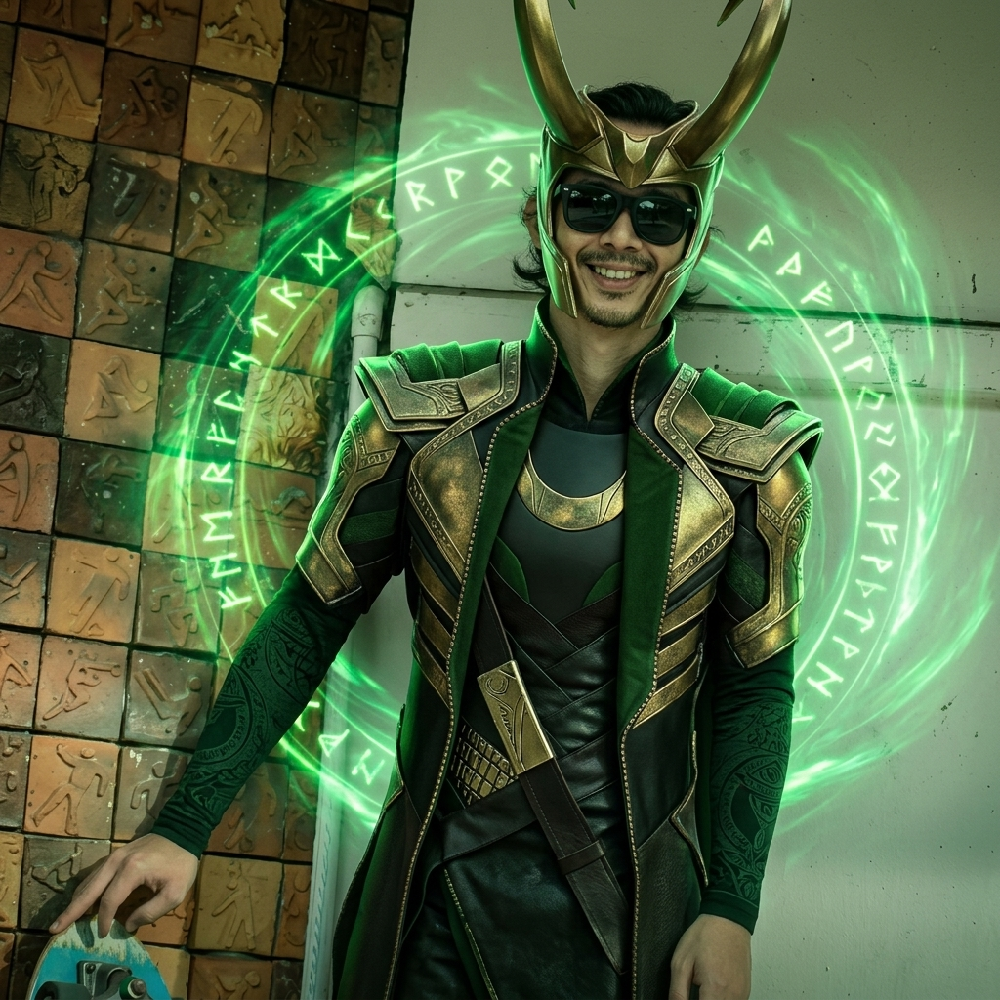

Loki of Earth-6969

ฉายา: เทพแห่งความกลียุค (God of Mischief)
คติประจำใจ: "I am burdened with glorious purpose... but this time, it's personal." (ข้าพเจ้ามาพร้อมกับภาระอันยิ่งใหญ่... แต่ครั้งนี้เป็นเรื่องส่วนตัว)
ยินดีต้อนรับสู่โลกของข้า ข้าคือโลกิจากจักรวาล Earth-6969 เทพผู้ควบคุมเส้นเวลาและมีความสามารถในการแปลงกายและสร้างภาพลวงตาที่ไม่มีใครเทียบได้
ประวัติส่วนตัว (About Me)
ข้าเกิดในดินแดนโยตุนไฮม์ แต่ถูกเลี้ยงดูในฐานะเจ้าชายแห่งแอสการ์ด ปัจจุบันทำหน้าที่ปกป้องมัลติเวิร์สและคอยสอดส่องเส้นเวลาจาก Earth-6969 ไม่ให้เกิดความโกลาหล (หรือจะเรียกว่ามาสร้างความโกลาหลเองก็ย่อมได้)
พลังและความสามารถพิเศษ (Skills & Abilities)
- การใช้เวทมนตร์สร้างภาพลวงตา (Illusion Casting)
- การแปลงกายเป็นสิ่งมีชีวิตอื่น (Shape-shifting)
- ทักษะการต่อสู้ด้วยมีดสั้นคู่ (Double Dagger Combat)
- การทำนายและการควบคุมเส้นเวลา (Temporal Manipulation)
- งานอดิเรก: การปั่นประสาทพี่ชาย (Thor) และการเดินทางข้ามมัลติเวิร์ส
ลำดับการศึกษาและการฝึกฝน (Timeline & Education)
- สถาบันเวทมนตร์หลวงแห่งแอสการ์ด (Royal Academy of Asgard): สำเร็จการศึกษาเวทมนตร์ขั้นสูงจากมารดา Frigga
- สำนักงานจัดการเส้นเวลา (Time Variance Authority - TVA): ผ่านการฝึกอบรมฟิสิกส์แห่งเวลาและการสืบสวนคดีข้ามมัลติเวิร์ส
- ผู้พิทักษ์มลติเวิร์ส (God of Stories): ได้รับการแต่งตั้งให้เป็นผู้ค้ำจุนเส้นเวลาทั้งหมด ณ จุดสิ้นสุดของกาลเวลา
ช่องทางการติดต่อ (Social Media)
GitHub ของฉัน |
Facebook ของฉัน